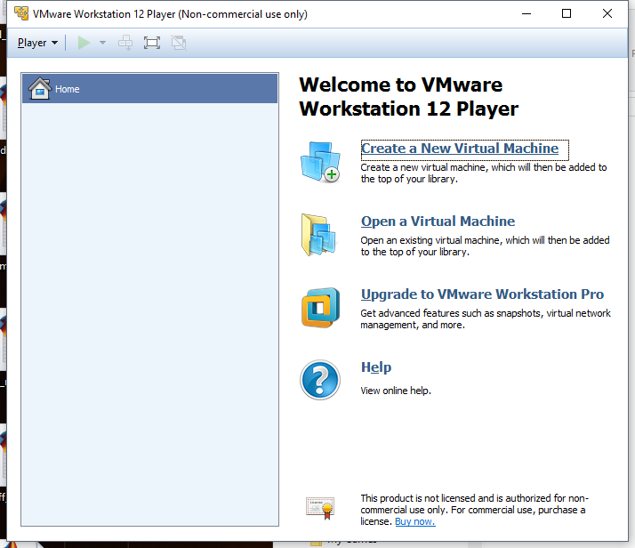
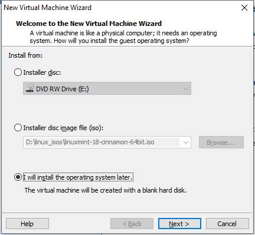
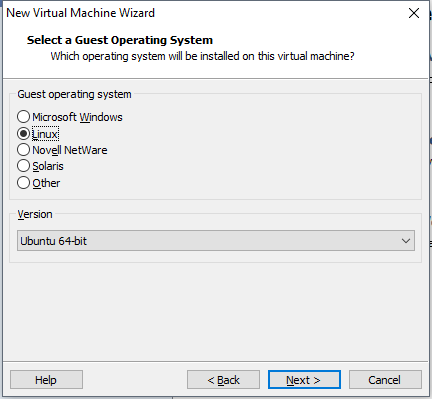
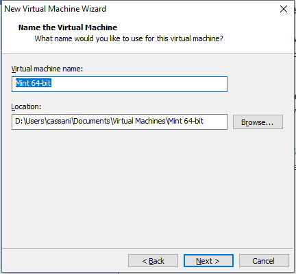
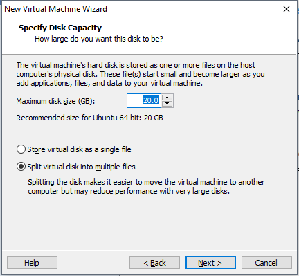
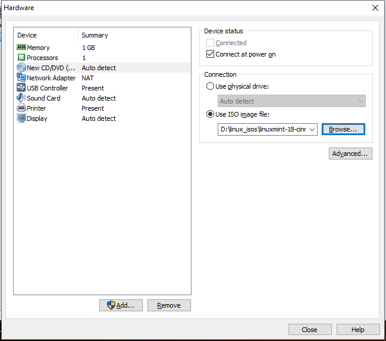
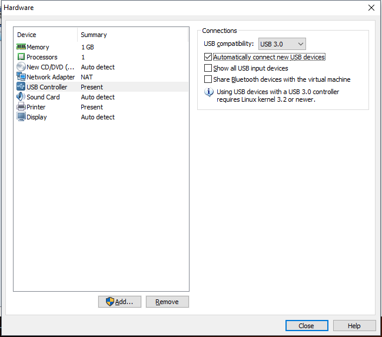
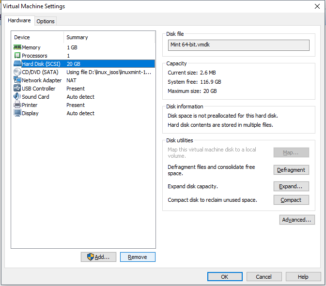
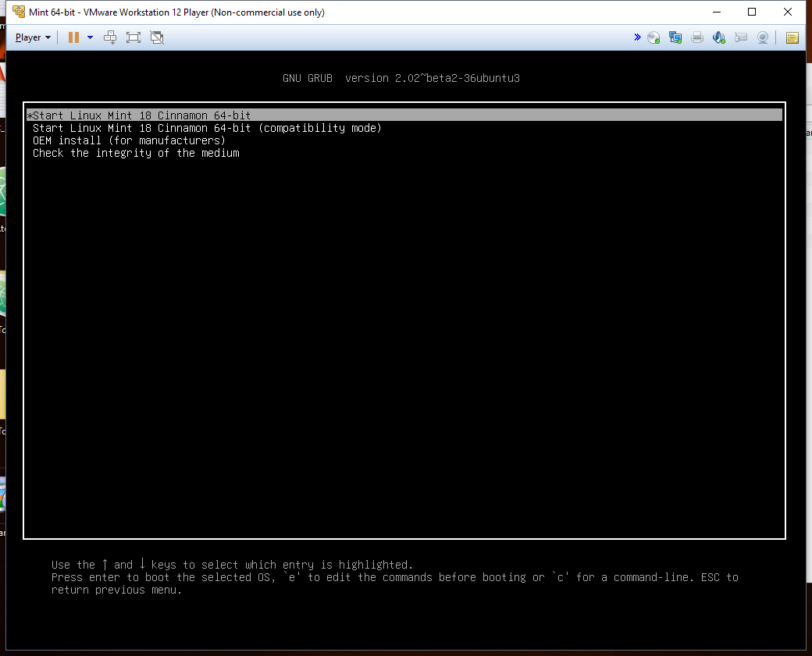
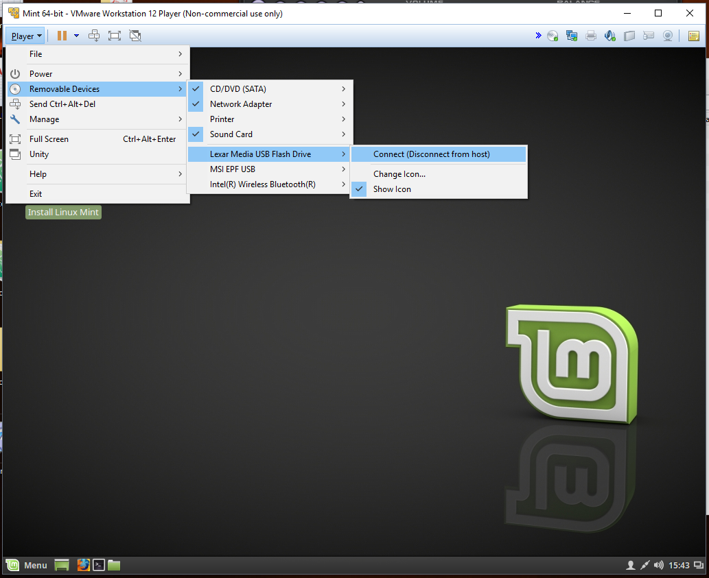

This post is about creating a UEFI-bootable full Linux installation in a USB Flash Drive or External HDD. For sake of simplicity, I’ll refer to a USB Flash Drive or a USB External HDD as USB-disk. This procedure is performed in a computer running Windows without installing Linux in the HDD, therefore there is no modification (nor mess) in the Windows EFI partition. Here a nice explanation on how UEFI boot works.
First of all, if you’re looking for Live-USB with or without Persistence with both Legacy and UEFI boot, a nice option in Windows is LinuxLive USB Creator. These are the differences between Live-USB with Persistence and a USB Full Install.
Process Big Picture
The procedure comprehends three main parts:
- Creating UEFI-booting Virtual Machine, without (virtual) HHD
- Installing Linux in the USB-disk
- Modifying the EFI partition in the USB-disk
Requirements
- VMware installed
The Workstation Player version is free for non-commercial use - USB-disk, USB3 if your computer supports it I’ve tried the procedure with both USB Flash Drive and External HDD
- ISO image of your favorite Linux distribution
For the following steps an ISO image of Linux Mint 18.1 64-bit was used, similar instructions should apply for other distributions.
Procedure:
1. Creating UEFI-booting Virtual Machine, without (virtual) HHD
- Open VMware and Create a New Virtual Machine

- Select the I will install the operative system later option. Click on Next

- Set Guest Operating System to Linux, select your version or the closest one, in my case the closest to Mint 64-bit is Ubuntu 64-bit. Click on Next

- Assign a Virtual machine name and Location to the Virtual Machine. Remember these fields, and they’ll used later. Click on Next

- Disk Capacity, default parameters (this HDD will not be used). Click Next

- Click on Customize Hardware
- For the New CD/DVD (SATA), Select Use ISO image file and browe for your Linux ISO image

- For the USB Controller, Select USB 3.0 (if supported), [X]Automatically …, [ ]Show all… and [ ]Share Bluetooth…

- For the New CD/DVD (SATA), Select Use ISO image file and browe for your Linux ISO image
- Before completing the wizard, identify the Location of the Virtual Machine. Click on Finish. Do not power ON the Virtual Machine yet.
- Go to the Virtual Machine Location, and with help of a text editor (e.g. Notepad), open the file
VMname.vmx(where theVMnameis the Virtual machine name assigned in step 4). And add the linefirmware = "efi"at the end of the file - In VMware, open the settings of your brand new Virtual Machine and remove the HDD

2. Installing Linux in USB-disk
In the step, the Virtual Machine will boot in UEFI using the Linux ISO image, from there it’ll possible to install Linux in the USB-disk.
- In VMware, Power ON the Virtual Machine. When booting on UEFI, it should look as below (at least for Mint 64-bit). Select Start Linux Mint 18 Cinnamon 64-bit (or Try Ubuntu without installing)

- Once the Linux session is started, connect (physically) your USB-disk, and be sure it’s connected to the Virtual Machine

-
To start the procedure with a blank USB-disk. In the Virtual Machine, Open GParted (hopefully is installed). Then select your device at the upper right corner (remember its sdx), then go to Device > Create Partition Table, select the type gtp. Close GParted.
-
Click on the Install Linux (Mint) icon on Desktop.
- Select your language.
- Leave unchecked the option Install third-party software…
- In Installation type select Erase disk and install Linux Mint
- One the installation is done, select Continue Testing
3. Modifying the EFI partition in the USB-disk
Still in the Linux session (Virtual Machine without HDD booted with Live-CD) from the previous section, the remaining part is to prepare the EFI partition on the USB-disk to make it UEFI-bootable
-
Create a folder
/mnt/efi/:::powershell $ sudo mkdir /mnt/efi/ -
Mount the EFI partition in the recently created folder. Change sdx for the corresponding to your USB-disk (step 4 in previous section)
$ sudo mount /dev/sdx1 /mnt/efi $ cd /mnt/efi/EFI
-
Copy the ubuntu folder to the same location with the name BOOT
$ sudo cp -r ./ubuntu/ ./BOOT/
-
Finally, copy the file
BOOTx64.EFIfrom to the Linux ISO image to the BOOT folder in EFI partition of the USB-disk$ sudo cp /media/cdrom/EFI/BOOT/BOOTx64.EFI ./BOOT/
-
Shut down the Virtual Machine properly.
Congratulations, now your USB-disk should be UEFI-bootable
Finally, reboot your computer, and select the USB-disk (Partition 1) for UEFI boot.
I’ve try this method using an external SSD via USB and a Lexar USB flash drive without issues.
Comments
comments powered by Disqus